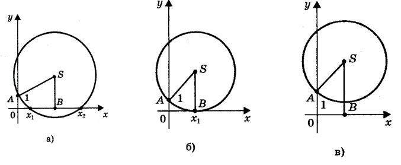
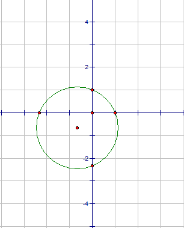

Решение квадратных уравнений с помощью циркуля и линейки
Предлагаем следующий способ нахождения корней квадратного уравнения
\(ах^2 + bх + с = 0\) с помощью циркуля и линейки.
Допустим, что искомая окружность пересекает ось
абсцисс в точках \(В(х_1; 0 )\) и \(D (х_2; 0)\), где \(х_1\) и \(х_2\) –
корни уравнения \(ах^2 + bх + с = 0\), и проходит через точки
\(A(0; 1)\) и \(C(0; \frac{c}{a})\) на оси ординат.
Тогда по теореме о секущих имеем OB • OD = OA • OC, откуда OC =
\(\frac{ОB * OD}{OA} = \frac{x_1 * x_2}{1} = \frac{c}{a}\)
Центр окружности находится в точке пересечения перпендикуляров SF и SK,
восстановленных в серединах хорд AC и BD, поэтому
\(SK = \frac{x_1 + x_2}{2} = \frac{-\frac{b}{a}}{2} = -\frac{b}{2a};\)
\(SF = \frac{y_1 + y_2}{2} = \frac{1 + \frac{c}{a}}{2} = \frac{a + c}{2a};\)
Итак:
1) построим точки \(s(-\frac{b}{2a};\frac{a + c}{2a})\)
(центр окружности) и A(0; 1);
2) проведем окружность с радиусом SA;
3) абсциссы точек пересечения этой окружности
с осью Ох являются корнями исходного квадратного уравнения.
При этом возможны три случая.
1) Радиус окружности больше ординаты центра (AS>SK, или R>a + c/2a),
окружность пересекает ось Ох в двух точках (рис. а) В(х1; 0) и D(х2; 0),
где \(х_1\) и \(х_2\) – корни квадратного уравнения \(ах^2 + bх + с = 0\).
2) Радиус окружности равен ординате центра (AS = SB, или R = a + c/2a),
окружность касается оси Ох (рис. б) в точке \(В(х_1; 0)\), где \(х_1\) -
корень квадратного уравнения.
3) Радиус окружности меньше ординаты центра AS<SB;R<(a+C)/2a
окружность не имеет общих точек с осью абсцисс (рис. в), в
этом случае уравнение не имеет решения.
окружность не имеет общих точек с осью абсцисс (рис. в),
в этом случае уравнение не имеет решения.

Два решения \(х_1\) и \(х_2\).
Одно решение \(х_1.\)
Нет решения.
Пример: \(3x^2+4x-7=0.\) Определим координаты точки центра окружности по формулам: $$ \begin{cases} x = -\frac{b}{2a} = -\frac{4}{2 * 3} = -\frac{2}{3}\\ y = \frac{a + c}{2a} = \frac{3 - 7}{2 * 3} = -\frac{2}{3} \end{cases} $$ Проведем окружность радиуса SA, где А (0; 1).
\(x_1 = -\frac{7}{3}, x_2 = 1\) 